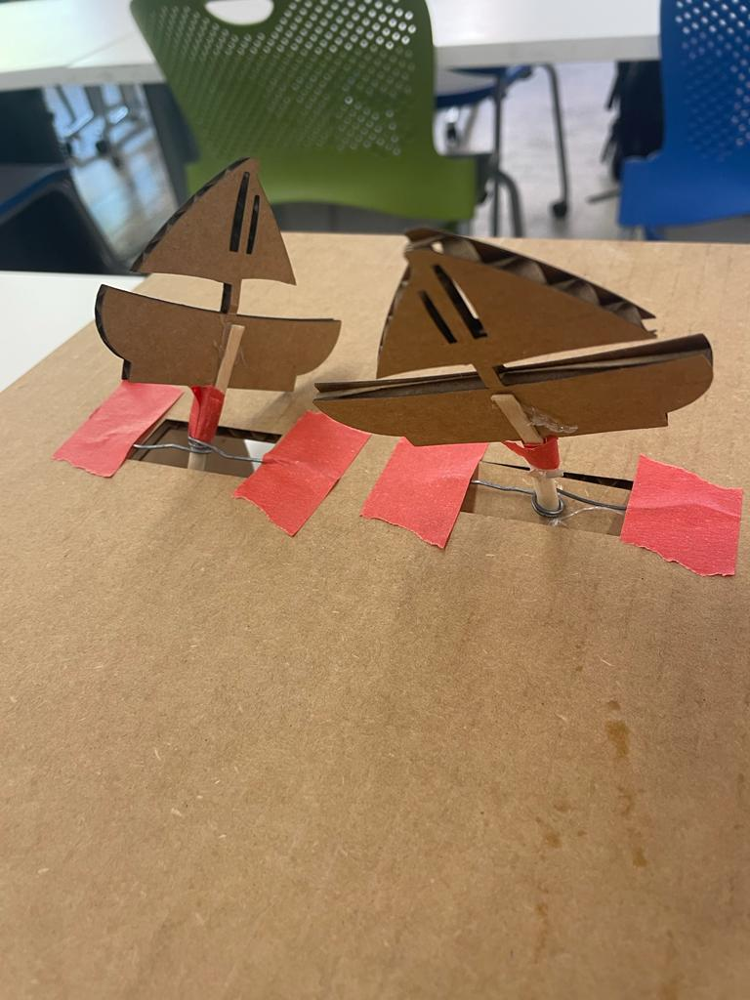
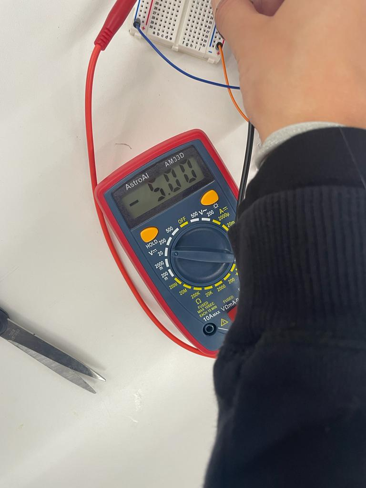

Week 3: Hand tools and Fabrication
<br>
<b>Prototyping</b>
This week we were tasked with making a kinetic sculpure. I wanted to understand how to create movements both horizontally and vertically so I decided to do a simple sculpture of boats sailing at sea with the boats popping up and down and the sails moving in small circles to give the illusion that they were moving back and forth. I decided that since I wanted the vertical motion to be optional, I would create a manual lever system to control the boats while the waves would be attached to two separate gears that were moved by a principal gear attached to a motor.
<b>3D printing</b>
The design of the sails and the waves were fairly straightforward. I used the same kerfs from last week’s project and only had to measure the diameter of the wooden doyles as I wanted that to be what kept my gear in place. To create the different gears I used the built-in gear function provided by Fusion 360. This ended up proving quite complicated. I first tried to print one larger gear with 10 teeth and two smaller gears with 5 teeth, keeping the other parameters constant and hoping that would make them fit. However, because my Module (ratio of gear teeth to pitch) was quite high, the gears keep getting stuck together.
After changing the module to 5 and 6 for the big gear and small gears respectively, they ended up fitting together. In retrospect I should have used the assemble function I learnt about last week before prototyping with cardboard to make sure the gears would fit together.
Luckily, the first iteration of my sailboats and waves turned out great!
<b>Vertical Motion</b>
<u>Rotating axyl</u>
At first I thought the simplest way to get my boats to bob up and down would be to make the central axyl completely out of wires. I tried to do this and bend the wires to include little bumps where the boats would be attached (shown below). I also attached a guiding wire to the boat and looped it around the axyl so it could move freely around the axyl. However I soon found that this sysem was too loose and my boat could not be held up by the wire. I realized I needed more structure and rigidity in my design so I switched to wooden doyles for both the axyl and the boat support.
<div class = "center">

</div>
Since I couldn’t bend the doyles as done with the wire, I decided to take inspiration from the butterfly kinetic sculpture example in class and attache circles at different lengths to allow for this up and down motion.
Originally I only added doyles to my boat and connected those to the rectangular platform that would interact with the rotating circles but again I realized this was not sufficiently constrained. I added two extra doyles that would go through the main platform and I found that this gave the boat system enough stability.
Now that my system was considerably rigid, I found that I needed to add more circles to my doyles to apply more force when pushing the platforms upwards. After adding weights to the bottom platforms my system was operating correctly.
<u>Overall thoughts</u>
The boats would get stuck occasionally as the sides supporting the platform were a little too close to the rotating system. If I get to do a second iteration of this I will definitely look into making It operate more smoothly. I glue gunned a lot of things in place as well and would like to find other ways to keep my system together.
<video class="w-100" width ="500" height="300" autoplay loop muted>
<source src="../03/boats.mp4" type="video/mp4" />
</video>
<b>Horizontal motion </b>
<u>Attaching waves</u>
At first I thought that I could simply attach the waves to a doyle and attach that doyle on the outer part of the gear. However I found that the motion of the wave was not what I anticipated and it kept trying to spin (i.e 360 spin) and hit the boats. Ideally to constrain the movements I could have added gears to the other side but for a temporary fix I decided to attached the waves to the doyle with a loose circular wire that would allow for movement and I constrained the other side with a toothpick. This ended up working but there was definitely opportunity for the waves to get stuck so I would also like to rework this as a second iteration.
<u>Overall thoughts </u>
While both vertical and horizontal Components of my kinetic sculpture work the lack of exactness in design and more advanced construction means that there is a high risk for both parts to get stuck. Ultimately I still see this as a success because I have a much better understanding of how to make things move in specific directions and I was able to use the laser cutter, drill press, hand saw and many other tools during this assignment.
<video class="w-100" width ="300" height="500" autoplay loop muted>
<source src="../03/waves.mp4" type="video/mp4" />
</video>
<b>Measuring voltage </b>
Without any resistors, I measured the voltage to be V= 4.28 V, suggesting that there was some internal resistance in the circuit from the friction of the gears or the wires (likely the former). When I tried adding a 1k ohm resistor, it used up all of the 5 volts. I then swapped it out for a 100 ohm resistor and it also prevented the gears from running.
<div class = "center">

</div>